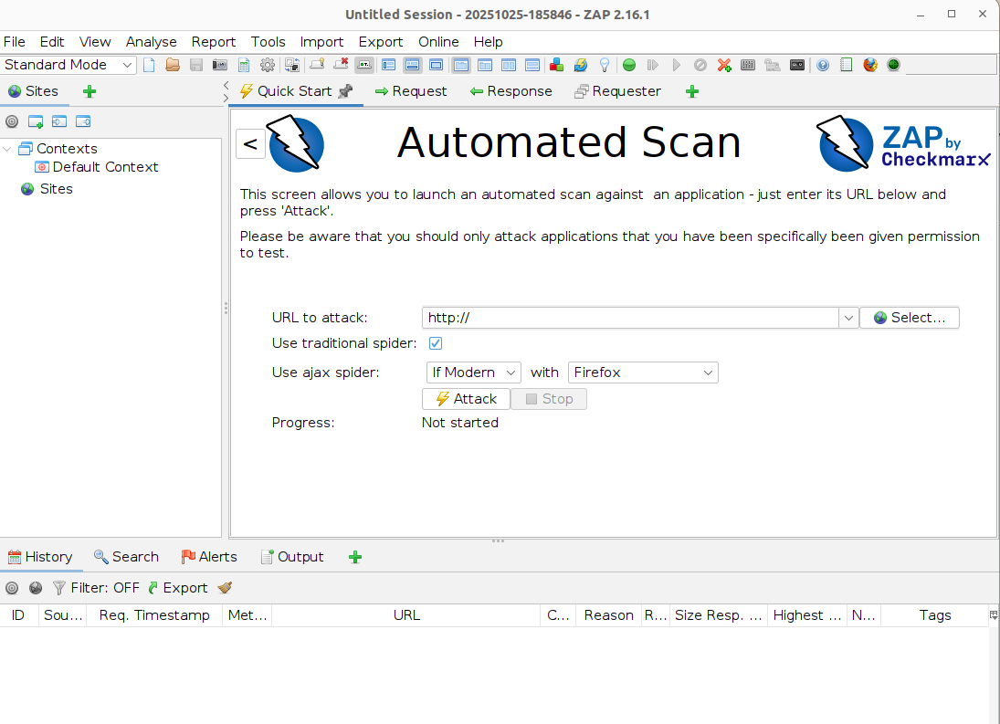

What is ZAP?
ZAP (Zed Attack Proxy) by Checkmarx is the world's most widely used open-source web application scanner. Originally an OWASP project, it helps developers and penetration testers automatically find security vulnerabilities — SQL injection, XSS, CSRF, and all OWASP Top 10 issues — in web applications.
kex &), Termux-X11, or TigerVNC before starting ZAP.
Installing ZAP
ZAP is packaged in Kali's repositories as zaproxy. A single apt command is all you need — it pulls in Java and all other dependencies automatically.
$ sudo apt update
$ sudo apt install zaproxy -y$ sudo apt update
$ sudo apt install zaproxy -yzaproxy may not be available. If the install fails, use the official installer from zaproxy.org/download or add Kali's tool repos first.The download includes Java runtime, ZAP core, and all bundled add-ons. It may take a minute or two to complete.
Starting ZAP
With installation complete, launch ZAP from a terminal inside your desktop session. Remember — a display must be active before running this command.
$ zaproxy
OWASP ZAP 2.16.0 starting …
[main] INFO org.zaproxy.zap.ZAP - OWASP ZAP 2.16.0
[main] INFO org.zaproxy.zap.ZAP - Platform: Linux amd64
[main] INFO org.zaproxy.zap.ZAP - Java: Eclipse Adoptium 17.0.9
[main] INFO org.zaproxy.zap.ZAP - Locale: en_GB
[ZAP] INFO org.zaproxy.zap.control.AddOnLoader - Loading add-ons from …ZAP will take 10–20 seconds to load on first launch while it initialises its database and add-ons. On subsequent launches it's faster. The GUI will open automatically once ready.

Basic Use — Your First Scan
Once ZAP is open, running your first scan takes three clicks. Always test against targets you own or have explicit permission to scan. The URL below is a legal practice target provided by Acunetix specifically for this purpose.
http://testphp.vulnweb.com| Colour | Severity | Meaning |
|---|---|---|
Red | High | Critical vulnerabilities — SQL injection, RCE, auth bypass |
Orange | Medium | XSS, CSRF, sensitive data exposure |
Yellow | Low | Missing security headers, cookie flags |
Blue | Informational | Notes on tech stack, server version disclosure |
Green | False Positive | Marked by you as not a real issue |
Troubleshooting
Common issues when getting ZAP running for the first time.
zaproxy: command not found
sudo apt install zaproxy -y again. If it still fails, the package may not be in your current repos — check with apt-cache search zaproxy.cannot open display or GUI won't appear
kex &, or launch Termux-X11 or TigerVNC, then run zaproxy from a terminal inside that session.curl http://testphp.vulnweb.com), then try increasing the spider timeout under Tools → Options → Spider.java -version. Install the correct version with sudo apt install openjdk-17-jre -y then relaunch.